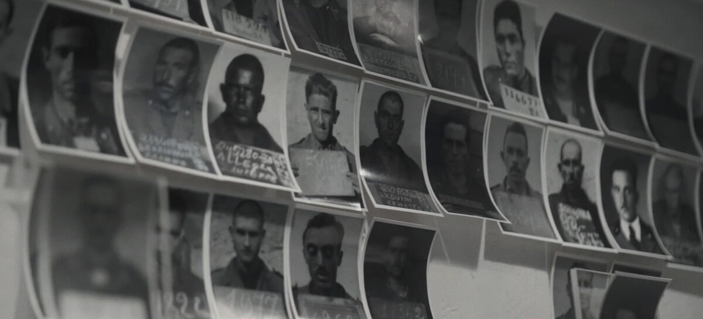
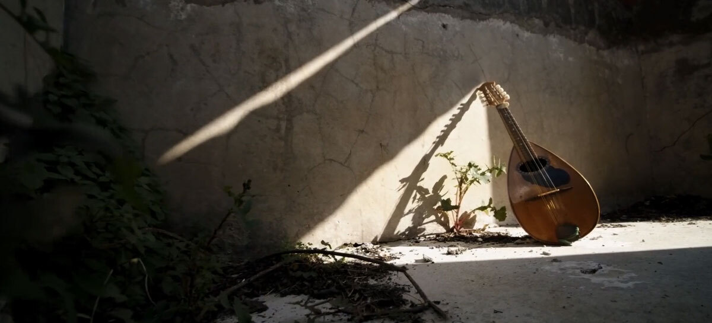

THE STORY OF AN ITALIAN MILITARY INTERNEE
A FILM BY SIMONE MENIN
il ragazzo conillibro sotto ilbraccio
“The boy with the book under his arm” is the first documentary by Simone Menin, produced by Wow Tapes and distributed by History Channel. It aims to promote the historical memory of the Second World War, through the personal story of an Italian military internee: Nildo Menin, the director's grandfather.
DISCOVER THE DIFFERENT CHAPTERS

00:01
THE DOCUMENTERY

00:02
NILDO MENIN

00:03
ITELIAN MILANTRY INERNEES

00:04
MY LIFE IS CAPTIVITY
00:05
PRESS

00:06
CREDITS
© The boy with the book under his arm - A film by Simone Menin
IT EN
website by Margherita Fortuna & Lorenzo Dossi